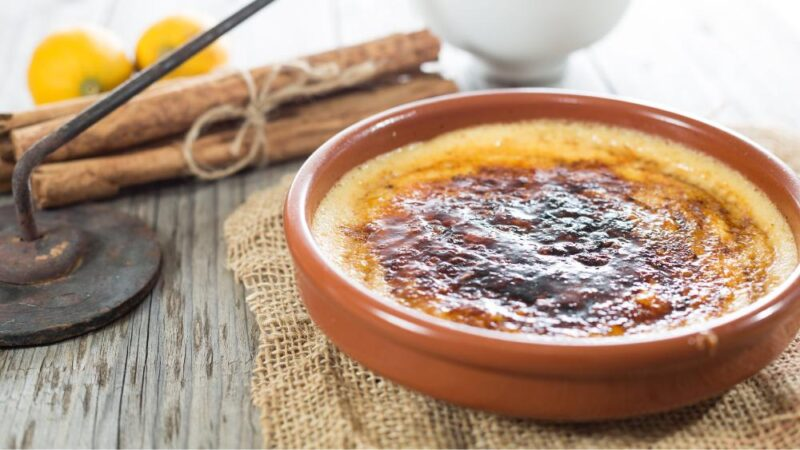

Crema catalana

¡Amigos y amigas de Paulina Cocina! Sean ustedes bienvenidos a un nuevo episodio de recetas dulces para la vida. No se preocupen por traer el postre porque hoy corre por nuestra cuenta. Cremosa, suave y con un touch crujiente, la crema catalana es una delicia.
Aunque es una especialidad de Cataluña, su popularidad ha trascendido las fronteras y se puede encontrar en restaurantes y pastelerías de todo el mundo. Pero si lo que quieren es hacerla en casa tengan en cuenta que no es muy difícil, no lleva mucho tiempo y se van a lucir con los invitados.
Ingredientes
- 500 ml de leche entera
- 6 yemas de huevo
- 100 gr de azúcar
- 30 gr de maicena (almidón de maíz)
- 1 rama de canela
- Piel de medio limón (sin la parte blanca)
- 6 cucharadas de azúcar
- Agua c/n
Paso a paso
- En una cacerola calentar la leche con la rama de canela y la piel de limón a fuego medio hasta que esté a punto de hervir. Retirar del fuego y dejar reposar durante unos minutos.
- En un bol aparte mezclar las yemas de huevo con el azúcar y la maicena hasta obtener una crema homogénea. Verter la leche caliente poco a poco, removiendo para evitar que las yemas se cocinen.
- Poner la mezcla en la cacerola y calentar a fuego bajo, revolviendo hasta que la crema espese sin dejar que hierva. Retirar la rama de canela y la piel de limón.
- Verter la crema en cuencos individuales y dejar enfriar a temperatura ambiente. Luego, refrigerar 2 horas.
- Esparcir una cucharada de azúcar sobre cada cuenco de crema. Usar un soplete de cocina para caramelizar el azúcar hasta que se derrita y forme una capa dorada y crujiente. Servir la crema catalana inmediatamente para disfrutar con la capa de caramelo recién hecha.
Volver